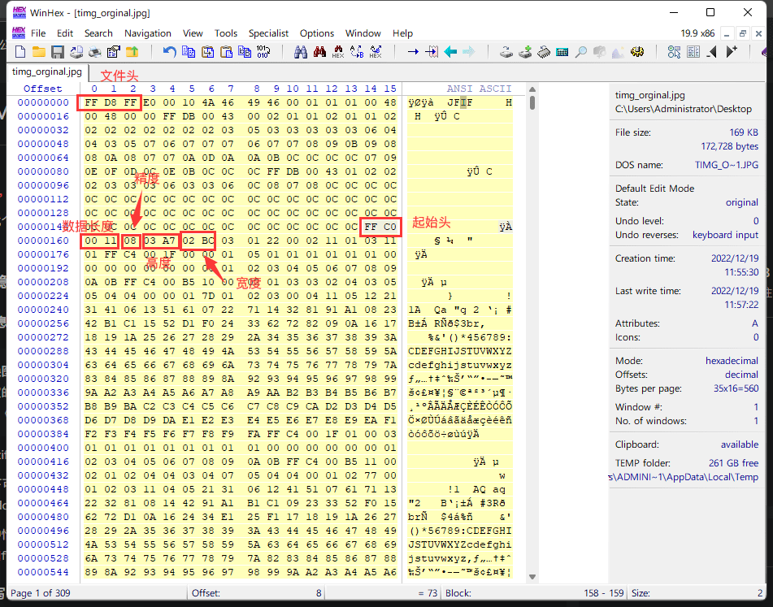
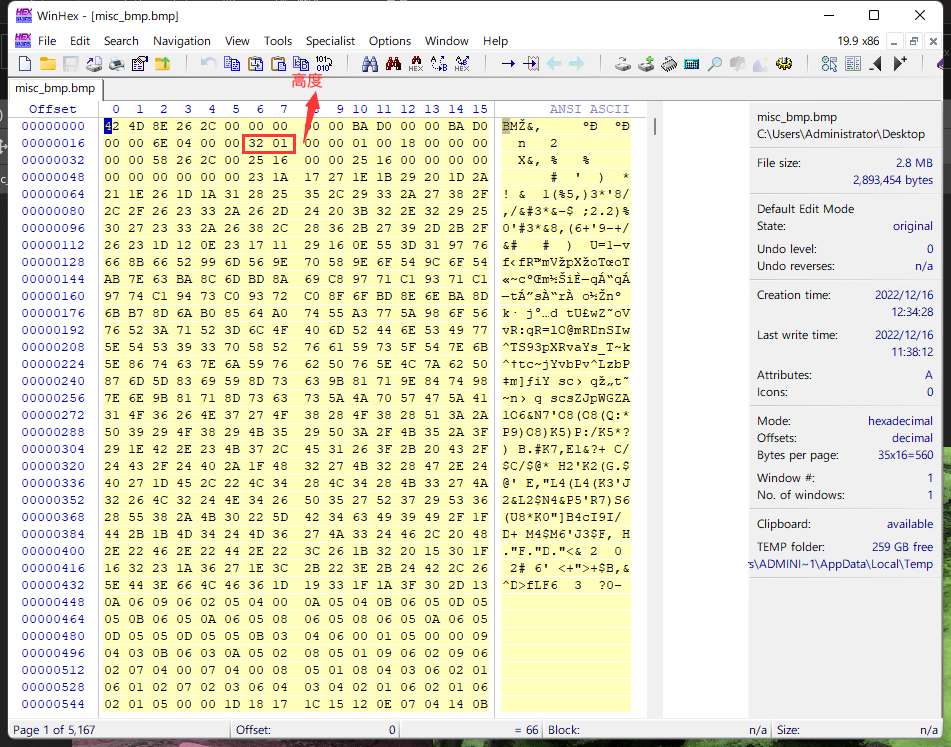
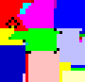

图片隐写
宽高隐写
PNG宽高隐写

JPG宽高隐写

BMP宽高隐写

CRC爆破
import struct
import zlib
def hexStr2bytes(s):
b = b""
for i in range(0,len(s),2):
temp = s[i:i+2]
b +=struct.pack("B",int(temp,16))
return b
str1="49484452"
str2="0806000000"
bytes1=hexStr2bytes(str1)
bytes2=hexStr2bytes(str2)
wid,hei = 457,238 #0x01C9,0x00EE
crc32 = "0xBE917539"
for w in range(wid,wid+2000):
for h in range(hei,hei+2000):
width = hex(w)[2:].rjust(8,'0')
height = hex(h)[2:].rjust(8,'0')
bytes_temp=hexStr2bytes(width+height)
if eval(hex(zlib.crc32(bytes1+bytes_temp+bytes2))) == eval(crc32):
print(hex(w),hex(h))
GIF帧分离
在线工具：https://uutool.cn/gif-edit/
在线图像隐写
pixeljihad
在线图片解析工具，能直接将像素值解码为消息，可能需要密码。 站点：https://sekao.net/pixeljihad/
npiet online
Piet是一种用颜色来编写代码。 特征：由色彩鲜艳的像素块组成

在线工具可以通过上传图片获取代码的输出信息。 在线工具：https://www.bertnase.de/npiet/npiet-execute.php
离线工具可以直接将图片作为代码运行。 离线工具：https://www.bertnase.de/npiet/npiet-1.3a-win32.zip
npiet.exe -q xxx.png
Stegdetect
Stegdetect程序主要用于分析JPEG文件。 因此用Stegdetect可以检测到通过JSteg、JPHide、OutGuess、Invisible Secrets、F5、appendX和Camouflage等这些隐写工具隐藏的信息。
Linux下载地址：https://old-releases.ubuntu.com/ubuntu/pool/universe/s/stegdetect/
使用方法
stegdetect -t jopi image.jpg
参数
j：JSteg 检测。p：JPHide 检测。o：OutGuess 检测。i：Invisible Secrets 检测。f：F5 检测。
OutGuess
在 JPEG 图像中隐藏和提取数据 GitHub地址：https://github.com/crorvick/outguess Debian软件包地址：https://ftp.debian.org/debian/pool/main/o/outguess/
使用方法
# 加密
outguess -k "你的密码" -d secret.txt input.jpg output.jpg
# 解密
outguess -k "你的密码" -r secret_cat.jpg extracted.txt
Steghide
可以在jpeg、bmp、wmv、au文件中隐写信息。 下载地址：https://steghide.sourceforge.net/download.php
使用方法
# 加密
steghide embed -cf test.jpg -ef secret.txt -p 123456
# 解密
steghide extract -sf test.jpg -p 123456
Stegseek密码爆破
专用于爆破 steghide 的密码。 GitHub地址：https://github.com/RickdeJager/stegseek
使用方法
stegseek xxx.jpg wordlist.txt
JPHide
JPHide/JPSeek 工具集，用于将文件写入jpeg图片。 GitHub：https://github.com/h3xx/jphs
使用方法
jphide input-jpeg-file output-jpeg-file file-to-be-hidden
jpseek input-jpeg-file output-hidden-file
F5
高级 JPEG 隐写，针对jpeg/jpg格式文件在频域的隐写术,压缩率高。 GitHub地址：https://github.com/matthewgao/F5-steganography
使用方法
# 加密
java Embed xxx.bmp xxx.jpg -c "" -e bin.noise
java Embed xxx.bmp xxx.jpg -c "" -e bin.noise -p password
# 解密
java Extract xxx.jpg
java Extract xxx.jpg -p password
- xxx.bmp：原载体文件
- xxx.jpg：嵌入隐藏信息后的载体文件
- bin.noise：信息文件
BlindWaterMark盲水印
将图片作为水印隐藏到另一个图片，解密需要两张图片，原图和有水印的图。 GitHub地址：https://github.com/chishaxie/BlindWaterMark
使用方法
# 加密
python bwmforpy3.py encode 1.png 2.png 3.png
# 解密
python bwmforpy3.py decode 1.png 3.png output.png
- 1.png：原图
- 2.png：水印
- 3.png：有水印的图
图片嵌入隐藏-大容量的信息隐藏算法
对每个像素点进行判断，根据HVS的特性，在最高非0有效位后的指定位(y)开始嵌入隐藏信息，嵌入到另一个指定位(z)为止。 参考帖子：https://blog.csdn.net/A657997301/article/details/82747506
合并图像
% 各通道肉眼可接受位差
yr = 4;
yg = 5;
yb = 3;
% 读取原图
Img = imread('原图.png');
figure;imshow(Img,[]);title('原图');
% 读取待隐藏的图
Imgmark = imread('待隐藏的图.png');
figure;imshow(Imgmark,[]);title('待隐藏的图');
% 转为灰度图
Imgmark = rgb2gray(Imgmark);
Imgmark = double(Imgmark);
[markm, markn] = size(Imgmark);
% 将灰度图的二维数组转成一列
Imgmarkline = Imgmark(:);
% 这一列再转化为更长的一列，二进制八位表示
Imgmarklinebin = zeros(markm*markn*8,1);
for ii = 1 : markm*markn
[Imgmarklinebin(8*ii-7), Imgmarklinebin(8*ii-6), Imgmarklinebin(8*ii-5), Imgmarklinebin(8*ii-4), Imgmarklinebin(8*ii-3),...
Imgmarklinebin(8*ii-2), Imgmarklinebin(8*ii-1), Imgmarklinebin(8*ii)] = Find8bits(Imgmarkline(ii));
end
%%
% 获得RGB各通道分量图
Img = double(Img);
ImgR = Img(:,:,1);
ImgG = Img(:,:,2);
ImgB = Img(:,:,3);
% 嵌入
% 对于红色通道
embedNumsed = 0; % 已嵌入个数
[M, N, Z] = size(Img);
y = zeros(8, 1);
flag = 0; % 辅助跳出的标志
ImgRline = ImgR(:); % 转换为一列
ImgRlineNew = ImgRline; % 嵌入后
for ii = 1 : M*N
if flag == 1; % 跳出外层循环
break;
end
[y(8), y(7), y(6), y(5), y(4), y(3), y(2), y(1)] = Find8bits(ImgRline(ii));
posNzreo = FindNotZero(y(8), y(7), y(6), y(5), y(4), y(3), y(2), y(1));
embedNums = posNzreo - yr; % 能嵌入的个数
if embedNums > 0 %符合嵌入条件
for jj = 1 : embedNums
embedNumsed = embedNumsed + 1; % 已嵌入个数
if embedNumsed > markm*markn*8 % 嵌入完成
flag = 1; % 设置标识，使外层循环也跳出
break;
end
y(jj) = Imgmarklinebin(embedNumsed);% 嵌入
end
end
ImgRlineNew(ii) = bin2dec_trans(y(8), y(7), y(6), y(5), y(4), y(3), y(2), y(1));% 嵌入后的
end
ImgR2 = reshape(ImgRlineNew, [M, N]);
% 对于G通道
ImgGline = ImgG(:); % 转换为一列
ImgGlineNew = ImgGline; % 嵌入后
for ii = 1 : M*N
if flag == 1; % 跳出外层循环
break;
end
[y(8), y(7), y(6), y(5), y(4), y(3), y(2), y(1)] = Find8bits(ImgGline(ii));
posNzreo = FindNotZero(y(8), y(7), y(6), y(5), y(4), y(3), y(2), y(1));
embedNums = posNzreo-yg; % 能嵌入的个数
if embedNums > 0 % 符合嵌入条件
for jj = 1 : embedNums
embedNumsed = embedNumsed + 1; % 已嵌入个数
if embedNumsed > markm*markn*8 % 嵌入完成
flag = 1; % 设置标识，使外层循环也跳出
break;
end
y(jj) = Imgmarklinebin(embedNumsed); % 嵌入
end
end
ImgGlineNew(ii) = bin2dec_trans(y(8), y(7), y(6), y(5), y(4), y(3), y(2), y(1)); % 嵌入后的
end
ImgG2 = reshape(ImgGlineNew, [M, N]);
% 对于B通道
ImgBline = ImgB(:); % 转换为一列
ImgBlineNew = ImgBline; % 嵌入后
for ii = 1 : M*N
if flag == 1; % 跳出外层循环
break;
end
[y(8), y(7), y(6), y(5), y(4), y(3), y(2), y(1)] = Find8bits(ImgBline(ii));
posNzreo = FindNotZero(y(8), y(7), y(6), y(5), y(4), y(3), y(2), y(1));
embedNums = posNzreo - yb; % 能嵌入的个数
if embedNums > 0 % 符合嵌入条件
for jj = 1 : embedNums
embedNumsed = embedNumsed + 1; % 已嵌入个数
if embedNumsed > markm*markn*8 % 嵌入完成
flag = 1; % 设置标识，使外层循环也跳出
break;
end
y(jj) = Imgmarklinebin(embedNumsed); % 嵌入
end
end
ImgBlineNew(ii) = bin2dec_trans(y(8), y(7), y(6), y(5), y(4), y(3), y(2), y(1)); % 嵌入后的
end
ImgB2 = reshape(ImgBlineNew, [M, N]);
ImgNew = zeros(M, N, Z);
ImgNew(:,:,1) = ImgR2;
ImgNew(:,:,2) = ImgG2;
ImgNew(:,:,3) = ImgB2;
figure;imshow(uint8(ImgNew),[]);title('合并后的RGB图');
imwrite(uint8(ImgNew), '合并后的RGB图.png'); % 保存图片分离图像
% 各通道肉眼可接受位差
yr = 4;
yg = 5;
yb = 3;
% 读取合并后的RGB图
Img = imread('合并后的RGB图.png');
[M, N, Z] = size(Img);
Img = double(Img);
ImgR2 = Img(:,:,1);
ImgG2 = Img(:,:,2);
ImgB2 = Img(:,:,3);
% 提取嵌入图像
flag = 0;
Imgmark_extractlinebin = zeros(M*N*8, 1);
extractNumsed = 0; % 已提取个数
% R通道
ImgRline2 = ImgR2(:); % 转换为一列
for ii = 1 : M*N
if flag == 1; % 跳出外层循环
break;
end
[y(8), y(7), y(6), y(5), y(4), y(3), y(2), y(1)] = Find8bits(ImgRline2(ii));
posNzreo = FindNotZero(y(8), y(7), y(6), y(5), y(4), y(3), y(2), y(1));
embedNums = posNzreo - yr; % 已嵌入的个数
if embedNums > 0 % 符合嵌入条件
for jj = 1 : embedNums
extractNumsed = extractNumsed + 1; % 已提取个数
if extractNumsed > M*N*8 % 提取完成
flag = 1; % 设置标识，使外层循环也跳出
break;
end
Imgmark_extractlinebin(extractNumsed) = y(jj); % 提取
end
end
end
% G通道
ImgGline2 = ImgG2(:); % 转换为一列
for ii = 1 : M*N
if flag == 1; % 跳出外层循环
break;
end
[y(8), y(7), y(6), y(5), y(4), y(3), y(2), y(1)] = Find8bits(ImgGline2(ii));
posNzreo = FindNotZero(y(8), y(7), y(6), y(5), y(4), y(3), y(2), y(1));
embedNums = posNzreo - yg; % 已嵌入的个数
if embedNums > 0 % 符合嵌入条件
for jj = 1:embedNums
extractNumsed = extractNumsed + 1; % 已提取个数
if extractNumsed > M*N*8 % 提取完成
flag = 1; % 设置标识，使外层循环也跳出
break;
end
Imgmark_extractlinebin(extractNumsed) = y(jj);% 提取
end
end
end
% G通道
ImgBline2 = ImgB2(:); % 转换为一列
for ii = 1:M*N
if flag == 1; % 跳出外层循环
break;
end
[y(8), y(7), y(6), y(5), y(4), y(3), y(2), y(1)] = Find8bits(ImgBline2(ii));
posNzreo = FindNotZero(y(8), y(7), y(6), y(5), y(4), y(3), y(2), y(1));
embedNums = posNzreo - yb; % 已嵌入的个数
if embedNums > 0 % 符合嵌入条件
for jj = 1 : embedNums
extractNumsed = extractNumsed + 1; % 已提取个数
if extractNumsed > M*N*8 % 提取完成
flag = 1; % 设置标识，使外层循环也跳出
break;
end
Imgmark_extractlinebin(extractNumsed) = y(jj); % 提取
end
end
end
% 二进制转十进制
Imgmarklinedec = zeros(M*N, 1); % 转化为十进制
for ii = 1 : M*N
Imgmarklinedec(ii) = bin2dec_trans(Imgmark_extractlinebin(8*ii-7), Imgmark_extractlinebin(8*ii-6), Imgmark_extractlinebin(8*ii-5), Imgmark_extractlinebin(8*ii-4),...
Imgmark_extractlinebin(8*ii-3), Imgmark_extractlinebin(8*ii-2), Imgmark_extractlinebin(8*ii-1), Imgmark_extractlinebin(8*ii));
end
Imgmarkextract = reshape(Imgmarklinedec, [M, N]);
figure;imshow(Imgmarkextract,[]);title('提取出的隐藏图');
imwrite(uint8(Imgmarkextract), '提取出的隐藏图.png'); % 保存图片公共函数
% 二进制转十进制
function Data=bin2dec_trans(y7,y6,y5,y4,y3,y2,y1,y0)
Data=y7*128+y6*64+y5*32+y4*16+y3*8+y2*4+y1*2+y0;
end
% Find8bits.m
function [y7,y6,y5,y4,y3,y2,y1,y0]=Find8bits(Data)
y0=mod(Data,2);
y7=fix(Data/128);Data=Data-y7*128;
y6=fix(Data/64); Data=Data-y6*64;
y5=fix(Data/32); Data=Data-y5*32;
y4=fix(Data/16); Data=Data-y4*16;
y3=fix(Data/8); Data=Data-y3*8;
y2=fix(Data/4); Data=Data-y2*4;
y1=fix(Data/2); Data=Data-y1*2;
end
% FindNotZero.m
%找出第一个不为零的数位 从最高位(第八位)开始
function posNzreo=FindNotZero(y7,y6,y5,y4,y3,y2,y1,y0)
if y7~=0 posNzreo=8;
elseif y6~=0 posNzreo=7;
elseif y5~=0 posNzreo=6;
elseif y4~=0 posNzreo=5;
elseif y3~=0 posNzreo=4;
elseif y2~=0 posNzreo=3;
elseif y1~=0 posNzreo=2;
else posNzreo=1;
end
end像素近邻法
将图a的像素按顺序嵌入到图b中，然后生成图c，可通过脚本得到不同尺寸的图片，也可以通过ps修改大小。
github：https://github.com/3150601355/SimpleScaleDown 图片特征：图片上均匀分布像素点
将图片嵌入另外一个图片
import sys
from PIL import Image
#将small_img中的像素用近邻法嵌入到big_img中
def my_nearest_resize(big_img, small_img):
big_w, big_h = big_img.size
small_w, small_h = small_img.size
dst_im = big_img.copy()
stepx = big_w/small_w
stepy = big_h/small_h
for i in range(0, small_w):
for j in range(0, small_h):
map_x = int(i*stepx + stepx*0.5)
map_y = int(j*stepy + stepy*0.5)
if map_x < big_w and map_y < big_h:
dst_im.putpixel((map_x, map_y), small_img.getpixel((i, j)))
return dst_im
if __name__ == '__main__':
big_img = Image.open(sys.argv[1]) # 大图
small_img = Image.open(sys.argv[2]) # 小图
dst_im = my_nearest_resize(big_img, small_img)
dst_im.save(sys.argv[3]) # 嵌入小图像素的大图提取图片
解密时使用ps或脚本改变图片尺寸 或者利用代码提取图片
import sys
from PIL import Image
img = Image.open(sys.argv[1])
img = img.resize((192, 108), Image.NEAREST)
img.save(sys.argv[2])文本写入bmp
图片特征：图片只有不规则像素点，无图案
将文字嵌入到bmp
from PIL import Image
import math
def encode(text):
str_len = len(text)
width = math.ceil(str_len ** 0.5)
im = Image.new("RGB", (width, width), 0x0)
x, y = 0, 0
for i in text:
index = ord(i)
rgb = (0, (index & 0xFF00) >> 8, index & 0xFF)
im.putpixel((x, y), rgb)
if x == width - 1:
x = 0
y += 1
else:
x += 1
return im
if __name__ == '__main__':
with open("xxx.txt", encoding="utf-8") as f:
all_text = f.read()
im = encode(all_text)
im.save("encode.bmp")从bmp提取文字
from PIL import Image
def decode(im):
width, height = im.size
lst = []
for y in range(height):
for x in range(width):
red, green, blue = im.getpixel((x, y))
if(blue | green | red) == 0:
break
index = (green << 8) + blue
lst.append(chr(index))
return ''.join(lst)
if __name__ == '__main__':
all_text = decode(Image.open("encode.bmp", "r"))
with open("decode.text", "w", encoding="utf-8") as f:
f.write(all_text)图片文件特征
PNG
文件头
89 50 4E 47 0D 0A 1A 0A 00 00 00 0D 49 48 44 52
00 00 03 30 00 00 04 DB 08 06 00 00 00 46 2C 50
D4
- 89 50 4E 47 0D 0A 1A 0A：PNG文件标识
- 00 00 00 0D：IHDR数据块数据域长为13
- 49 48 44 52：IHDR数据类型码（标识）
- 00 00 03 30：表示图像的宽度，816像素
- 00 00 04 DB：表示图像的高度，1243像素
- 08 06 00 00 00：对图片的一些描述
- 46 2C 50 D4：CRC校验码
文件尾：
00 00 00 00 49 45 4E 44 AE 42 60 82
JPG
文件头
FF D8 FF
文件尾
FF D9
GIF
文件头
47 49 46 38
文件尾
00 3B
TIFF
文件头
49 49 2A 00